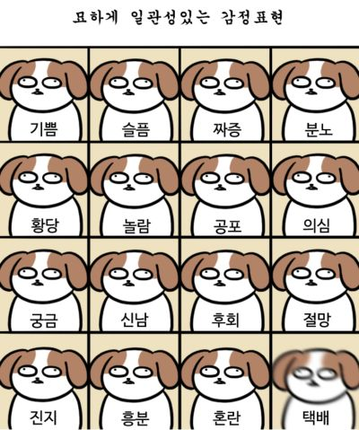

출처: 대학일기
Spring: 봄은 보리가 좋아하는 계절 중 하나. 산책을 나가기 좋기 때문. 그러나 벌과 나비가 많아서 한번은 벌에 쏘인 적도 있는 계절. 보리의 생각을 알 수는 없지만 벌에 쏘였던 과거를 기억하고 있는지는 의문. 대화가 된다면 한번 물어보고 싶긴 함.

출처: 대학일기
Summer: 여름은 알다시피 매우 더워서 보리가 산책을 나가면 30분도 안돼서 들어오고 싶어함. 여름에 오후 산책을 시킬 때, 저녁 약속이 있어서 오후 2~3시경에 산책을 시키면 주로 안은 채로 산책을 시켰던 것 같음. 더울까봐 물을 챙겨가도 밖에선 절대 안먹음. 알면서도 맨날 챙겨가긴 함.
출처: 대학일기
Autumn: 가을은 날이 선선해서 보리가 산책하기 좋은 계절. 이 글의 작성 시기도 가을인데, 오늘은 가을비가 내려 보리가 산책을 못감. 그래서 조금 심통났는데, 목욕까지 시켜서 더 짜증났을지도... 미안해 보리야...
Winter: 겨울은 춥지만 옷을 뜨듯하게 입고 나가면 산책은 할 수 있음. 눈이 올 때는 주로 발뿐만 아니라 몸도 더러워져서 잘 안나감. 그러나, 목욕하는 날엔 특별히 눈이 와도 나갈 수 있는데, 그날은 눈 밟는 걸 즐기는 듯한 느낌임. 한번은 얼음 조각이 발에 박혔는지 끙끙댔는데, 내가 떼어주려하니, 내 코를 확 물어버림ㅜㅜ... 서운했지만 그것보단 웃긴게 더 크긴 했음:)